Loop Engineering 是什么？AI 编程从 Prompt 到 Loop 的范式转变
大家好，我是小林。
不知道你有没有跟我一样的感觉：AI 圈造新词的速度，已经超过我学习的速度了。
前年说会用 AI 的关键是 prompt engineering，赶紧学；去年又说 prompt 过时了，现在流行 context engineering，行，接着学；今年 3 月冒出来一个 harness engineering，估计还有很多同学没整明白 harness 到底是什么。
其实 harness engineering，我之前就写过一篇： 万字长文图解 Harness 工程，还没看过的同学，可以补补课。当时这篇文章收获了很多读者的好评。
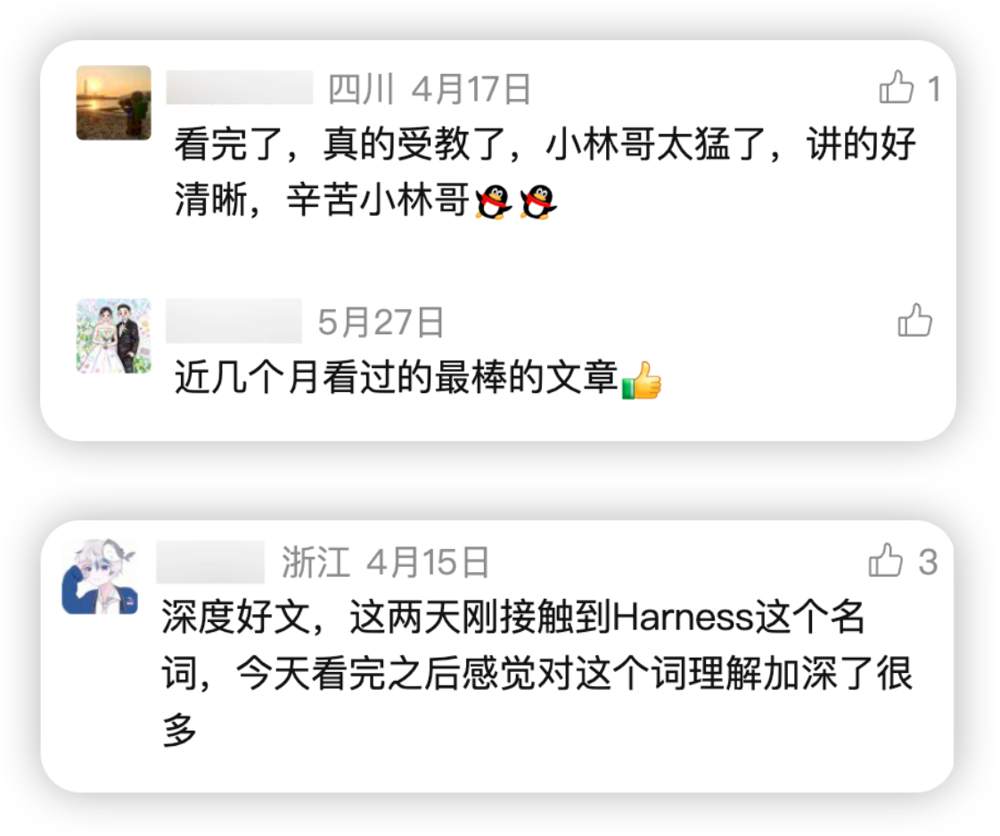
现在这才 6 月，又来了，这次的新词叫 loop engineering。
讲真，我第一反应是翻白眼：又来？是不是把 engineering 前面换个单词就能造一个赛道？
但我把来龙去脉扒了一圈之后，我收回了白眼。
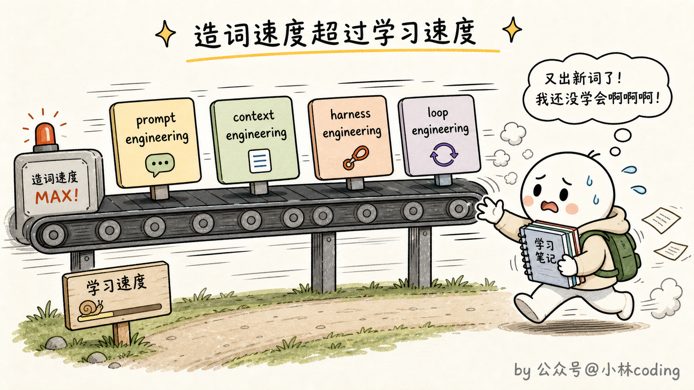
这个词不是哪个营销号造的。
点火的是 Peter Steinberger，开源 agent 项目 OpenClaw 的作者，他 6 月 7 日发了条推文，说：「每月例行提醒：你不该再给 coding agent 打 prompt 了。你该去设计那个给 agent 打 prompt 的 loop。」
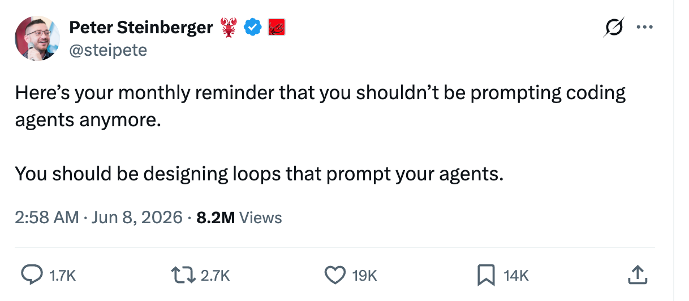
给概念定名写长文的是 Addy Osmani，Google Cloud 的 AI 总监：
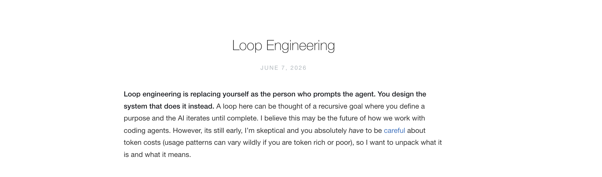
而几天前，Claude Code 创始人 Boris Cherny 在访谈里说了一句更猛的话，等于提前给这个概念背了书：
「我已经不 prompt Claude 了。是 loop 在运行着 prompt Claude、决定做什么。我的工作是写 loop。」
一个造工具的、一个定方法论的、一个每天泡在一线的产品创始人，三个人在同一周说了同一件事。
这种程度的共振，值得认真看一看。
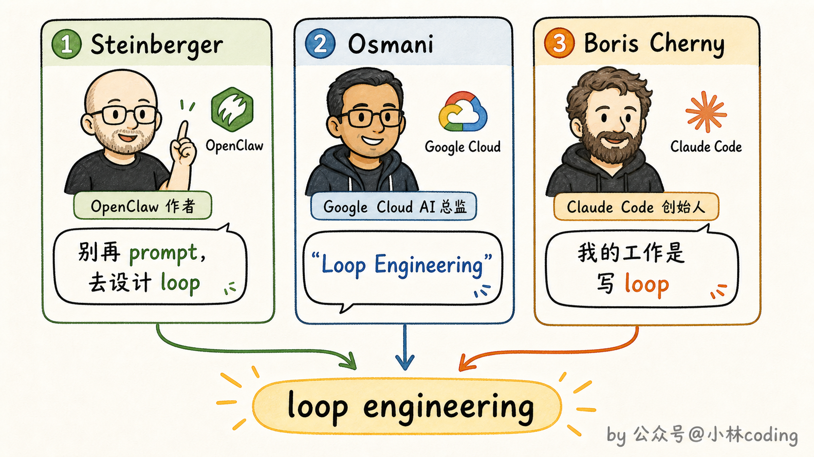
这篇文章我整理成 6 个问题：
- Q1：四个 engineering，到底都在 engineering 什么？
- Q2：Loop Engineering 到底是什么？
- Q3：一个 loop 由什么组成？
- Q4：拼起来之后，一个真实的 loop 长什么样？
- Q5：工具已经追上来了，现在就能搭
- Q6：三盆冷水：loop 越好用，这三个问题越尖锐
我们一个一个来说。
Q1：四个 engineering，到底都在 engineering 什么？
在讲 loop 之前，得先把欠的账还了：prompt、context、harness 这三个词，很多人到现在也只是「听过」，没真正分清。
先问一个问题：为什么这些词会一个接一个地冒出来？是 AI 圈闲得慌吗？
还真不是。每个新词的出现，背后都是同一件事：上一个瓶颈被解决了，新的瓶颈暴露出来了。把这条线从头捋一遍，四个词一下就清楚了。
时间回到 2023 年。那时候模型只会一问一答，你问得好不好，直接决定答得好不好。
于是大家研究话术：角色扮演、思维链、少样本示例。
这就是提示词工程（Prompt Engineering），本质是跟一个聪明但一根筋的实习生说话的技巧，同一件事换个问法，效果天差地别。这个阶段的瓶颈，卡在「怎么说」。
但话术的红利吃不了太久。到了 2025 年，模型变强了，也开始当 agent 干活了，光会说话不够用了。
你让它改一个 bug，它写得再漂亮也没用，因为它没看过你的代码、不知道你的规范、不了解之前的讨论。话术解决不了「巧妇难为无米之炊」。
于是瓶颈从「怎么问」移到了「喂什么」：把对的代码、文档、工具、历史记忆，在对的时机塞进上下文窗口。这就是上下文工程（Context Engineering），当时 Shopify 的 CEO 和 Karpathy 先后带火了这个说法。
类比一下：你不再纠结怎么跟实习生说话，而是开始给他准备一桌整理好的资料。
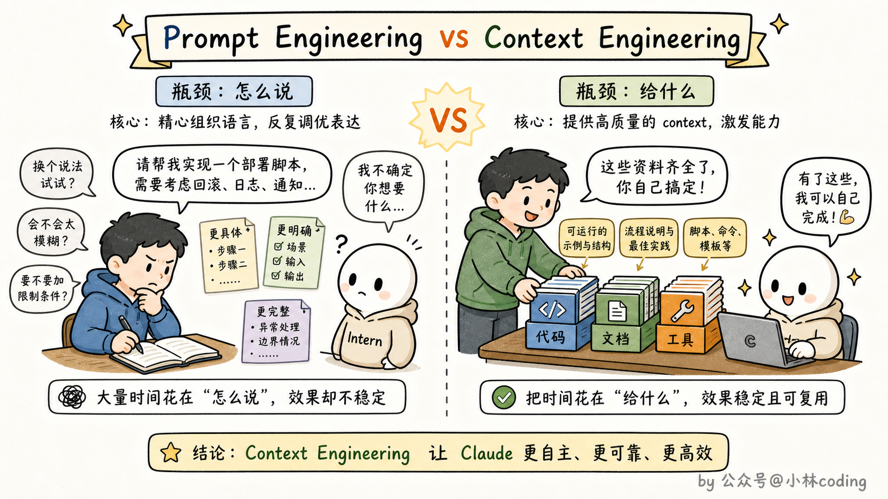
prompt engineering 与 context engineering 对比图
材料的问题刚解决，新的短板马上接棒。2026 年初，模型已经能连续干几个小时的活了，这时候卡脖子的不再是材料，而是它干活的「环境」跟不上。
它需要工具去执行命令、需要权限边界防止误伤、需要沙箱安全地试错、需要派出子 agent 分头探索、需要上下文管理机制防止越干越糊涂。这一整套围绕模型搭建的运行装备，业内叫 harness（直译是马具，可以理解成 agent 的「驾驶舱」）。
今年 3 月前后，Anthropic、OpenAI、LangChain 几家几乎同时发文章讨论这件事，还有人给出了一个很好记的公式：Agent = 模型 + harness。同一个模型，驾驶舱不一样，能力可以差出几倍。
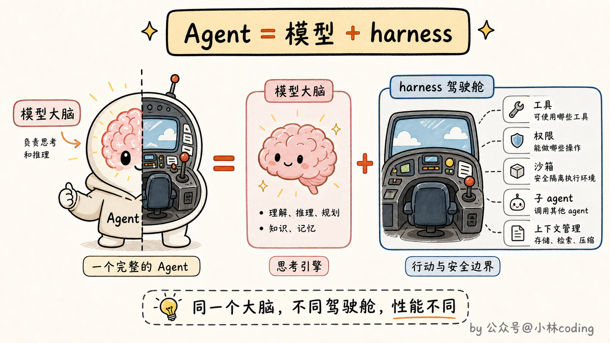
Agent 等于模型加 harness 公式拆解图
话术、材料、驾驶舱，三道坎都迈过去了。那最后剩下的瓶颈是谁？
你自己。
模型在等你布置任务，harness 在等你启动，材料在等你投喂。整条流水线上，唯一还需要人肉驱动的环节，就是你坐在屏幕前敲下一条 prompt。你睡觉，它就停工。
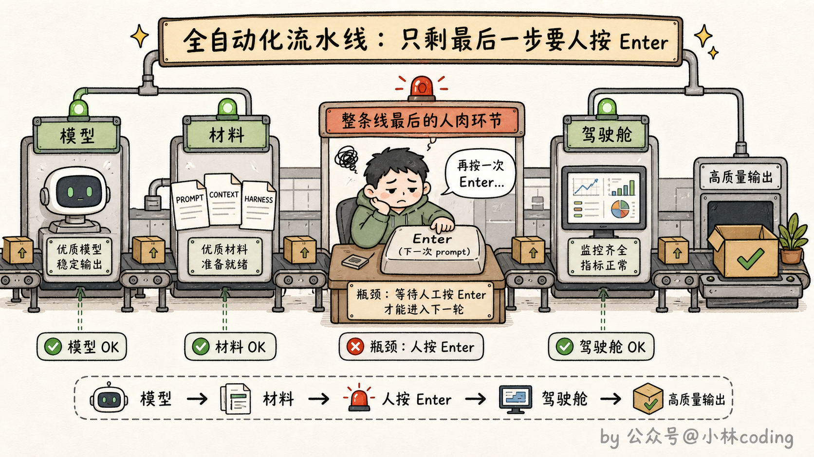
最后瓶颈示意图
loop engineering 瞄准的就是这最后一环：设计一个系统，让「下一次回车」不再由你来按。
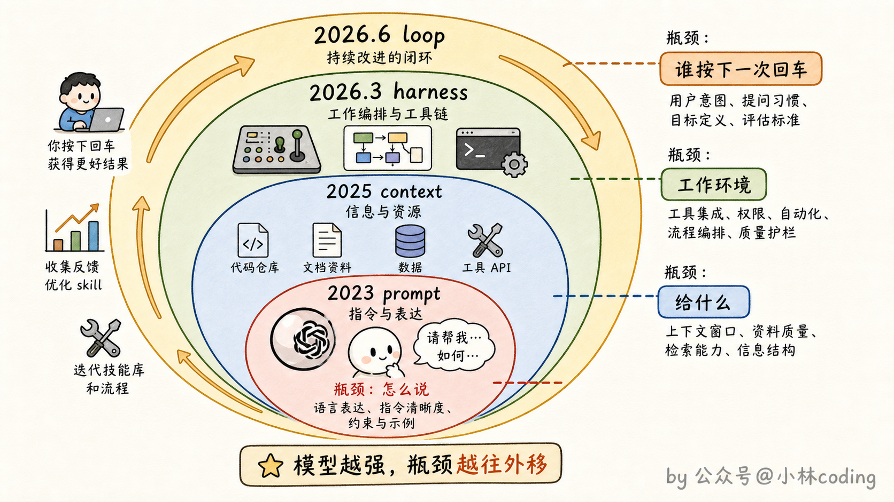
四代概念演进总览图
看出规律了吗？模型每变强一截，瓶颈就往外移一层：从你说的那句话，到你给的那堆材料，到它干活的环境，最后落到你本人身上。
所以这些词不是营销轮换，是瓶颈迁移的路标。
四个 engineering，本质是同一场瓶颈迁移：最后一个瓶颈，是坐在键盘前的你。
Q2：Loop Engineering 到底是什么？
铺垫完了，现在正面回答：loop engineering 是什么？
开头 Steinberger（OpenClaw 的作者） 那条 800 多万浏览的推文，只负责把口号喊响：别再 prompt 了，去设计 loop。但口号当不了定义。
紧接着，Osmani（Google Cloud 的 AI 总监） 的长文给出了正式定义：
「Loop engineering 就是把『亲自给 agent 写 prompt 的那个你』替换掉。你转而去设计那个代替你做这件事的系统。」
他还补了一句对 loop 本身的解释：loop 可以理解为一个递归式的目标，你定义一个目的，AI 持续迭代，直到完成。
说人话就是：过去两年，你跟 coding agent 的协作方式是回合制的，你写一条 prompt，读它的输出，再写下一条。agent 是工具，你全程握着它，一回合都不能松手。
loop engineering 说的是，松手吧。你把「发现任务、布置任务、检查结果、决定下一步」这套流程设计成一个能自己运转的循环，然后让循环去握着 agent。
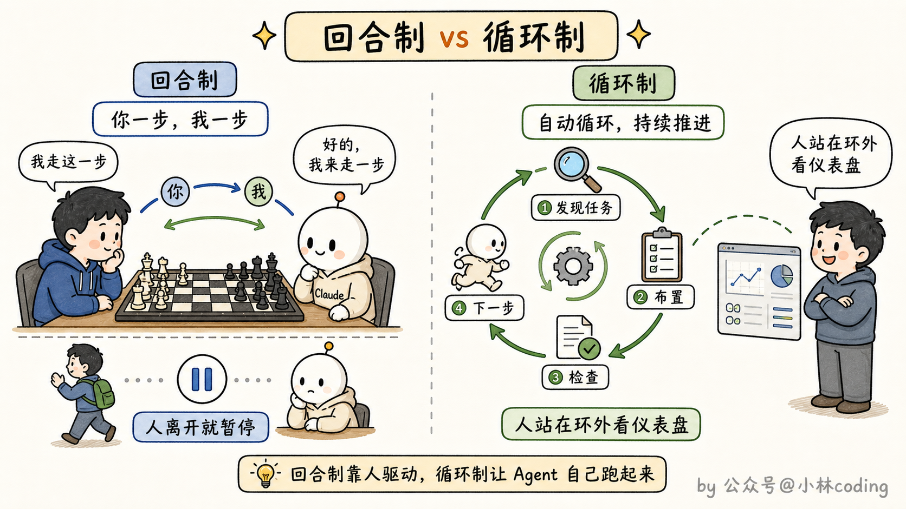
回合制 vs 循环制对比图
打个比方。以前你是客服热线的接线员，每个电话都要你亲自接、亲自答；现在你升级成了设计工单系统的人：电话怎么分流、哪类问题转给谁、办结标准是什么、办不了的怎么升级到你，规则定好，系统自己转。
你没有离开这家公司，但你的岗位变了。
这也是 Claude Code 创始人说的那句「我的工作是写 loop」的真实含义。注意，他没说工作变轻松了。这句话真正的重点是：工作没有变容易，是杠杆的支点移动了。
什么叫支点移动？以前你写一条好 prompt，收益是「这一次回答变好」；现在你设计一个好 loop，收益是「之后每一次循环都变好」。投入从消耗品变成了资产。
但反过来，设计 loop 也比写 prompt 难得多：你要考虑触发、并行、验证、状态、止损，相当于从「说一句话」升级到「设计一套制度」。杠杆变长了，对握杠杆的人要求也变高了。
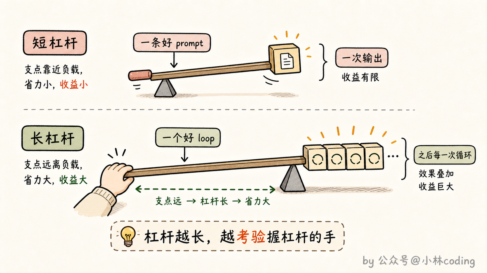
杠杆支点移动示意图
loop engineering 一句话：你不再是 prompt 的作者，你是 prompt 生产系统的设计师。
Q3：一个 loop 由什么组成？
概念清楚了，落地的问题马上来了：一个能自己运转的 loop，到底需要哪几样东西？
把那些真正跑起来的 loop 拆开看，你会发现零件出奇地一致：五大件，外加一个记东西的地方。我们一件一件过，每一件都对应一个「不装它就会翻车」的具体场景。
第一件：自动化，loop 的心跳
先想一个问题：你写了一个很完美的工作流脚本，但每次都要你手动启动，它算 loop 吗？
不算。自动化才让 loop 成为真正的 loop，否则它只是一个你跑过一次的任务。
所以第一件就是定时或事件触发：每天早上自动扫一遍 CI 失败、每次 PR 合并自动跑一轮检查。心跳有了，循环才算活着。
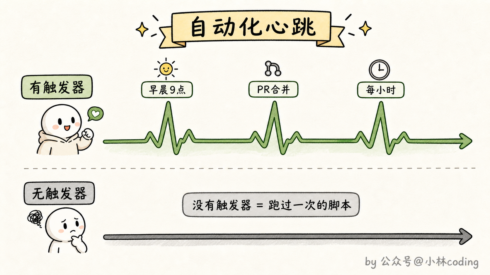
自动化心跳示意图
第二件：worktree，让并行不变成打架
loop 一旦跑起来，经常是几个 agent 同时干活。这时候你会撞上一个特别具体的麻烦：两个 agent 同时改同一个文件。
就像两个工程师挤在同一台电脑上改同一行代码，还互相不打招呼。
解法是 git 的 worktree 机制：给每个 agent 一个独立的工作目录和独立分支，共享同一份仓库历史，但物理上互不干扰。各干各的，最后各开各的 PR。
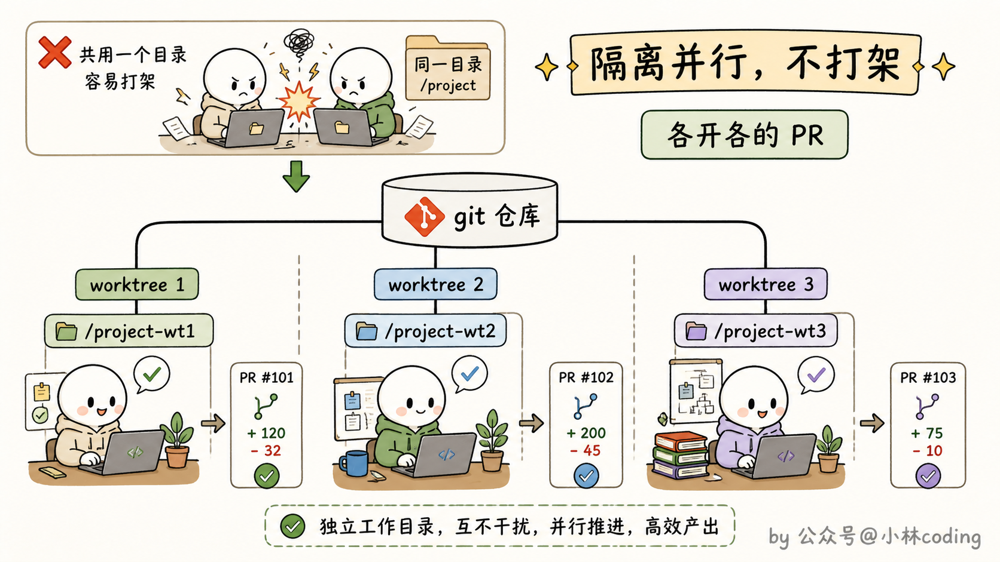
worktree 并行隔离示意图
第三件：skill，治好 agent 的「金鱼记忆」
agent 有个天生缺陷：每个会话都是冷启动，你项目里的规范、约定、坑，它一概不知。
于是你不得不像对金鱼一样，每个会话把项目重新解释一遍。更要命的是，你没解释到的地方，它不会空着，它会用一个自信的猜测填上。
skill 就是把这些项目知识写成文件放在仓库里，让 agent 该用的时候自己读。这件事对 loop 的意义比对单次会话大得多：没有 skill，loop 每个周期都从零重新推导你的项目；有了 skill，知识是复利的。
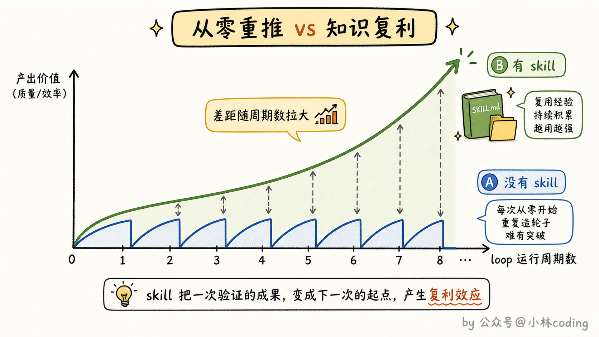
从零重推 vs 知识复利对比曲线图
第四件：connector，让 loop 摸到真实世界
一个只能看见文件系统的 loop，撑死了算半个 loop。
真实的工作流不止于代码：要读 issue 工单、查监控、发消息、开 PR。connector（基于 MCP 协议的连接器）就是把这些外部系统接进来的桥。
接上之后的差别有多大？一个 agent 只会告诉你「修复方案在这里」，而一个完整的 loop 会自己开好 PR、关联好工单，等 CI 变绿之后自己去频道里通知人。
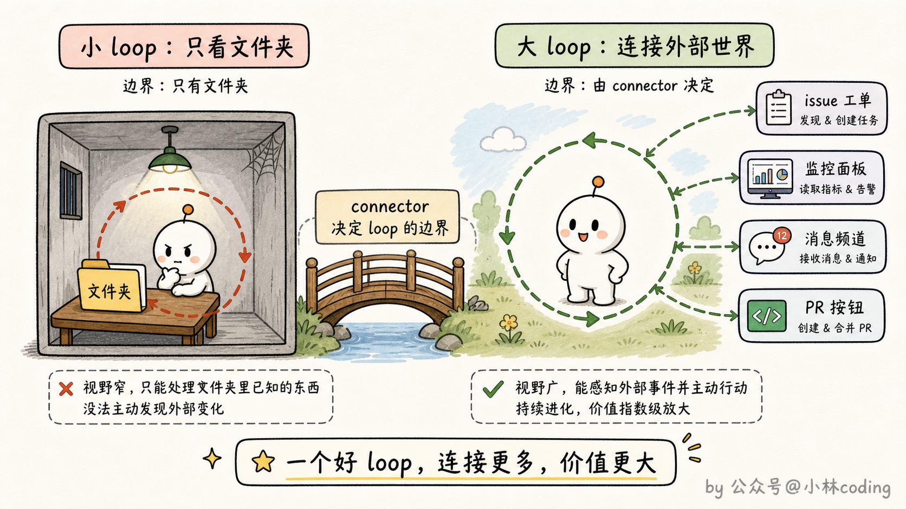
小 loop vs 大 loop 视野对比图
第五件：sub-agent，写的人和查的人必须分开
五大件里最有用的结构性设计，我认为遥遥领先的一条，是这个：把写代码的 agent 和检查代码的 agent 分开。
为什么？理由只有一句话，但谁听谁服：写代码的那个模型，给自己的作业打分时，实在太手下留情了。
让 A 出方案，让一个干净上下文的 B 来挑刺，B 没有「希望自己是对的」的包袱，挑出来的问题才是真问题。
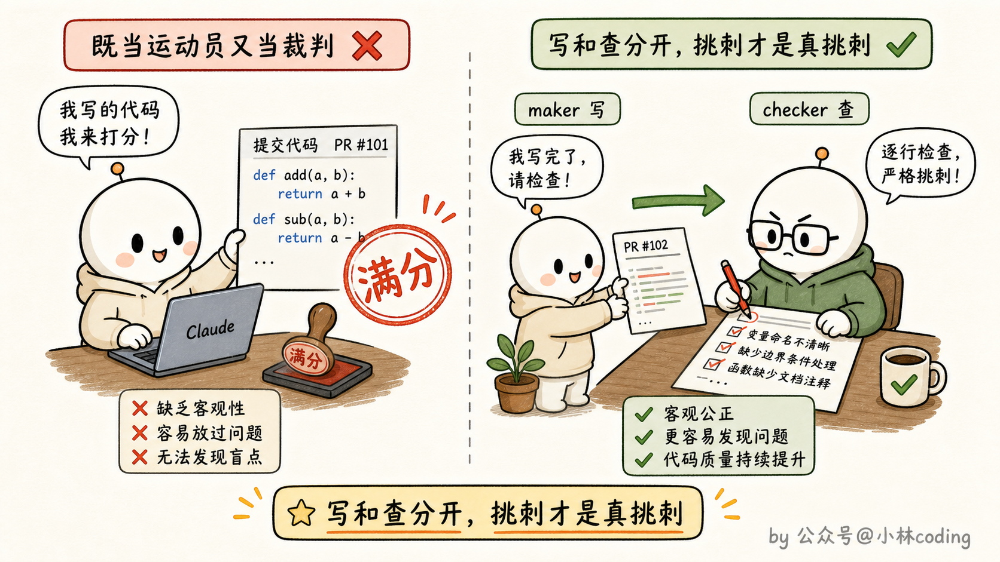
maker 和 checker 分离示意图
第六件：记忆，loop 的命根子
最后这件听起来最不起眼，但它是整个 loop 的命根子。
问题是这样的：模型在两次运行之间会忘掉一切。今天的循环干了什么、哪些做完了、哪些卡住了，明天的循环一概不知道。
解法朴素到让人意外：把记忆放在磁盘上，而不是上下文里。一个 markdown 文件、一个任务看板，什么都行，只要它活在单次对话之外，记录着「做完了什么、下一步是什么」。
这件事，Osmani 的博客里留了一句很妙的总结：
「agent 会忘，但 repo 不会。」
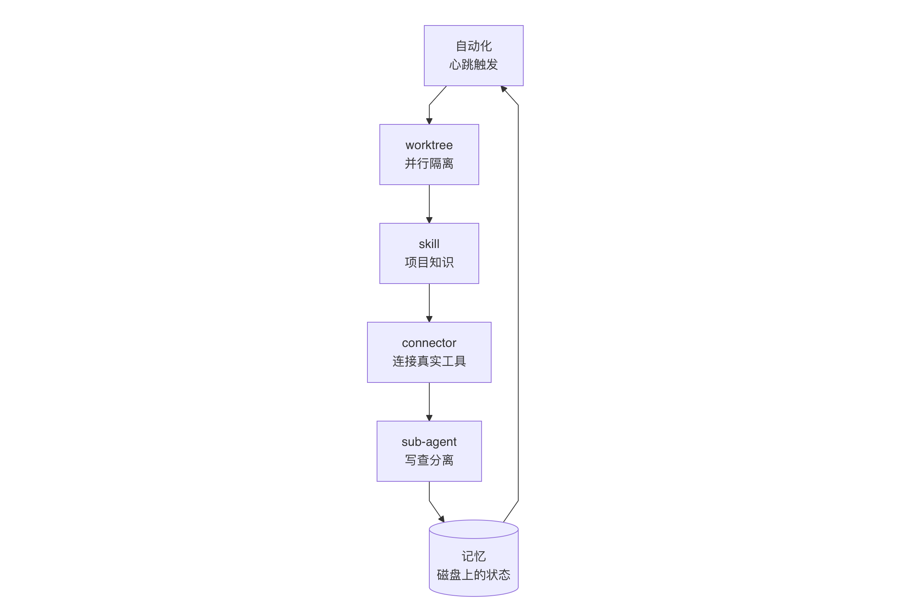
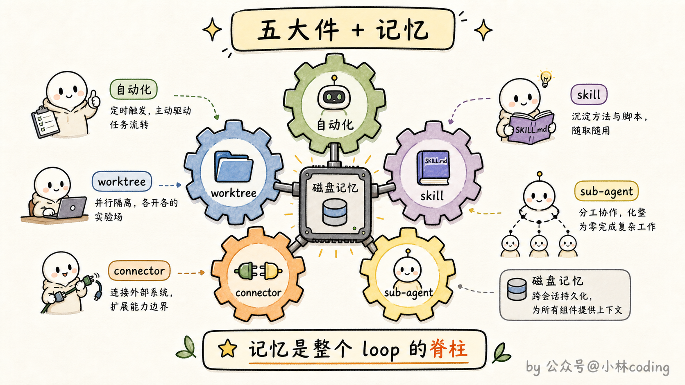
五大件加记忆的全家福图
五大件让 loop 转得起来，磁盘上的记忆让它第二天还接得上。
Q4：拼起来之后，一个真实的 loop 长什么样？
零件都认识了，该看整车了。
Osmani 在文章里给了一个他自己在用的 loop，我把流程完整搬过来。这个 loop 的任务是：每天早上自动把项目里值得修的问题找出来、修好、提交审核。
第一步，每天早晨，自动化准时触发，调用一个负责分诊的 skill。
第二步，这个 skill 去读昨天的 CI 失败记录、还没关闭的 issue、最近的提交，把「哪些问题值得处理」写进一个状态文件。
第三步，对每一个值得做的问题，开一个隔离的 worktree，派一个 sub-agent 进去起草修复。
第四步，第二个 sub-agent 登场，对照项目的 skill 规范和现有测试，把那份草稿审一遍。
第五步，审过了，connector 自动开 PR、更新对应的工单。
第六步，loop 搞不定的问题，不硬来，丢进一个待办收件箱，等真人来看。
第七步，所有经过都写回状态文件。明天早上的循环从今天停下的地方继续。
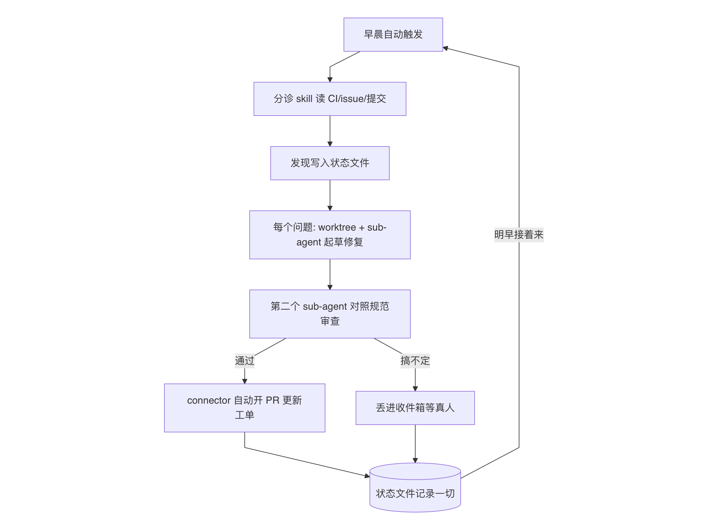
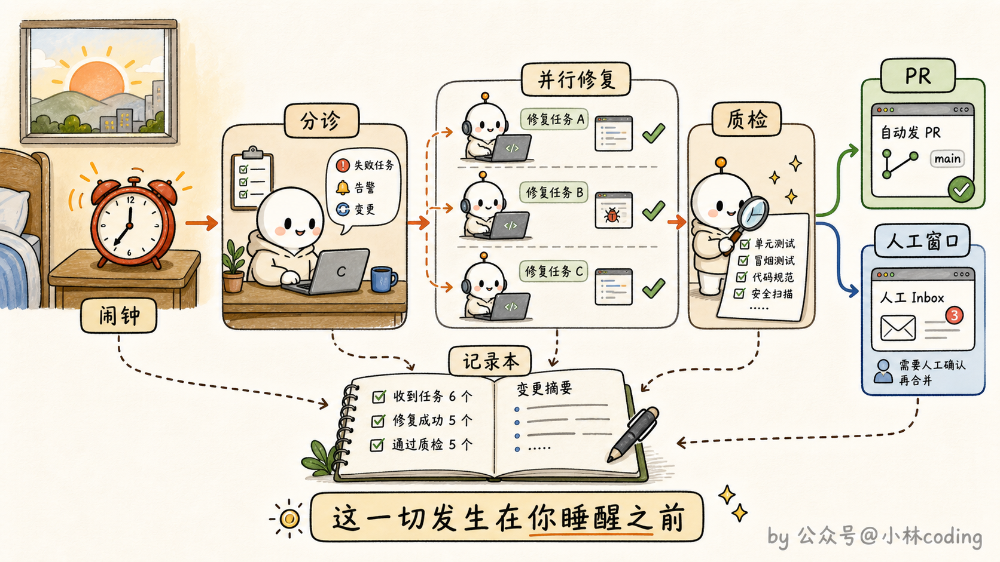
晨间 triage loop 全流程图
流程走完，你品一品这里面最关键的一件事：整个过程里，你只设计了一次，中间的任何一步，你都没有写过 prompt。
这就是 Steinberger 那句口号的落地版本。你的活从「每一步都出现」变成了「只在两个地方出现」：设计循环的时候，和收件箱里有东西的时候。
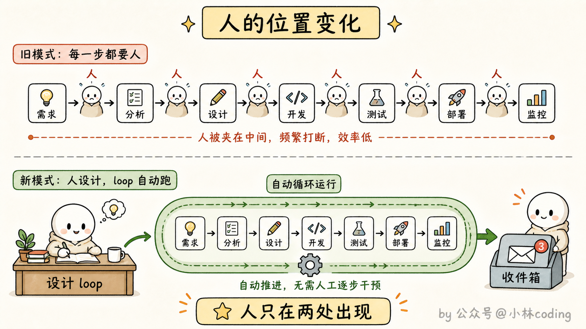
人的位置变化示意图
一个好 loop 的标志：你只在设计时出现一次，之后只在收件箱前出现。
Q5：工具已经追上来了，现在就能搭
听到这里你可能会想：道理是好道理，但搭这么一套系统，工程量不小吧？
这正是这次概念能火起来的底气所在。这里有一个很关键的时间差：一年前，搭一个 loop 意味着写一堆只有你自己看得懂、还得永远自己维护的 bash 脚本；而现在，五大件全部内置在主流产品里。
我把两家头部产品的部件整理成一张对照表：
| 部件 | 在 loop 里的职责 | Codex | Claude Code |
|---|---|---|---|
| 自动化 | 定时发现和分诊 | Automations 面板 + 分诊收件箱 | 计划任务、/loop、hooks |
| worktree | 隔离并行任务 | 每个线程内置 worktree | git worktree、隔离配置 |
| skill | 固化项目知识 | Agent Skills | Agent Skills |
| connector | 连接外部工具 | 基于 MCP 的 Connectors | MCP servers |
| sub-agent | 分头干活、写查分离 | 配置文件定义子 agent | 子 agent、agent teams |
| 记忆 | 追踪进度 | markdown 或接工单系统 | markdown 或接工单系统 |
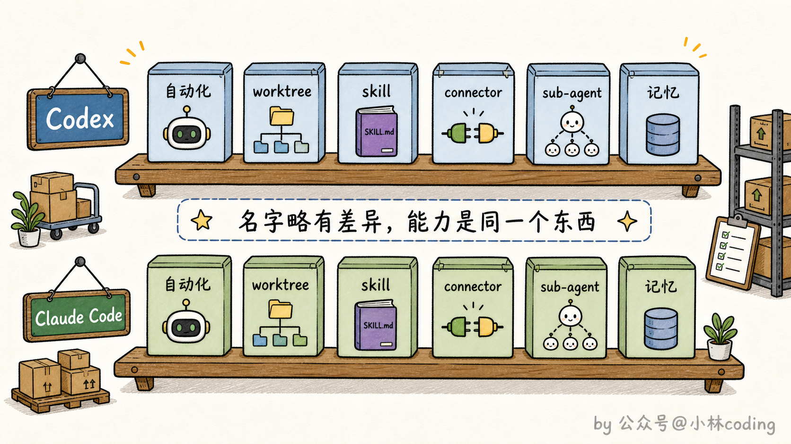
双产品部件对照货架图
这张表里还藏着一个值得单独拎出来的细节：两家都有一个 /goal 类的能力，它和普通定时循环的区别很微妙，但很重要。
普通的循环是按节奏重复跑：每小时跑一次，跑完就完了，对不对另说。而 /goal 是跑到你写的条件为真才停，比如「目录下所有测试通过且 lint 干净」。更妙的是，每一轮结束后，由一个独立的模型来判断条件是否达成。
发现没有？这就是上一节说的「写的人和查的人分开」，只不过这次用在了「什么时候算干完了」这个停止条件上。连「我做完了」这句话，都不让干活的那个 agent 自己说。
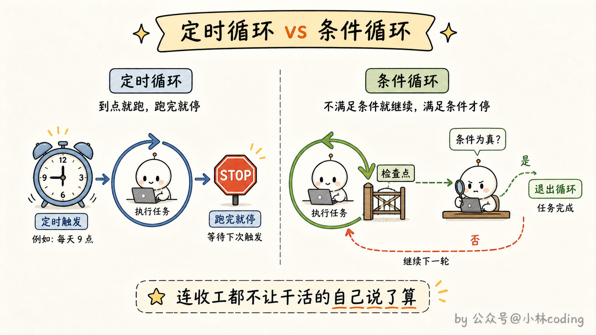
定时循环 vs 条件循环对比图
实操：30 秒搭出你的第一个 loop
光说不练假把式，我们拿一个所有人都烦过的场景，真刀真枪走一遍。
这个场景是：你提了个 PR，然后开始等 CI。挂了，切回去看日志、改、推送，再等。一下午切了八次窗口，正经活没干多少。
在 Claude Code 里，这件事用一条 /loop 命令就能交出去：
/loop 10m 检查当前分支 PR 的 CI 状态：有失败的检查就读日志、修复、推送；
全部变绿后停下来，给我一句话总结改了什么
把这条命令拆开看，麻雀虽小，loop 的骨架是全的。
10m 是心跳：每 10 分钟自动醒来跑一轮，不用你按回车。中间那段是任务：每一轮干什么。最后一句是停止条件加汇报：什么时候算完、完了怎么交差。
敲下去之后你就可以去干别的了。CI 挂了它自己修，修完自己推，全绿了它叫你。刚才那个来回切窗口的下午，被压缩成了「最后看一眼总结」。
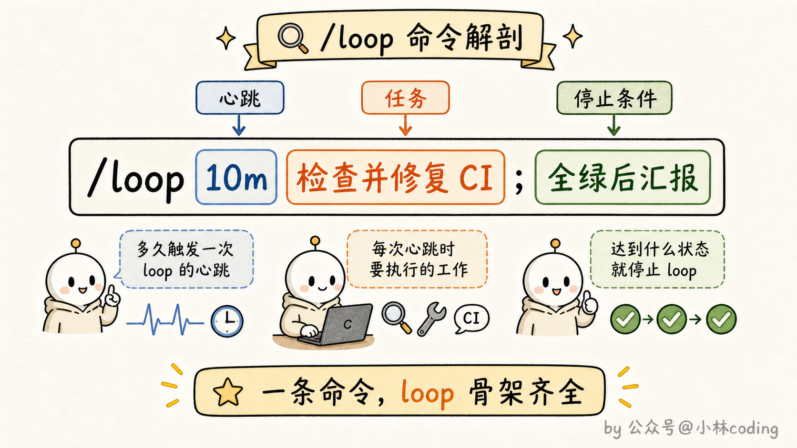
loop 命令解剖图
还有个更省心的玩法：把间隔省掉，直接 /loop 加任务。这时候节奏由模型自己定，它会根据「CI 一般要跑多久」来决定多久看一次，不会傻乎乎地一分钟刷一次。
两个使用边界也交代清楚，免得你回头骂我。
第一，/loop 活在当前会话里，适合「今天盯着这件事」的轮询；你关掉电脑它就停了。想要那种睡觉时也在跑的 loop，要用计划任务或者云端的 routines，让它脱离你的机器运行。
第二，回头对照 Q3 的五大件你会发现，这个最小 loop 只有心跳、任务和停止条件，没有 worktree、没有写查分离的 sub-agent。这不是缺陷，是起点：先让最小的循环转起来，哪天你觉得「它自己改的代码我不放心」，再把检查的 sub-agent 加上；觉得「想同时盯三个 PR」，再上 worktree。部件是一件一件长出来的，不是一天配齐的。
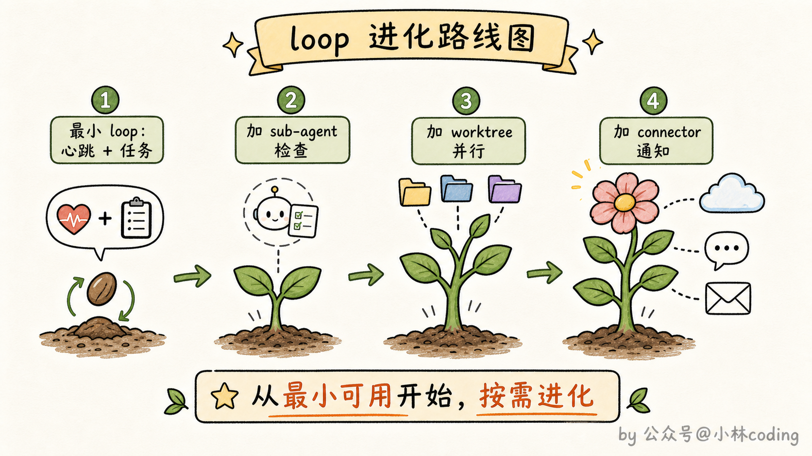
loop 进化路线图
而对照表还说明了一件更大的事：两家产品的部件几乎一一对应，loop 的设计正在变得工具无关。部件是同样的部件，差的只是商标。
这意味着什么？意味着「选 Codex 还是选 Claude Code」这种争论的重要性在下降。loop 的设计图纸是你的资产，画好了，放在哪家的产品上都能转。值得积累的是图纸，不是对某家工具的肌肉记忆。
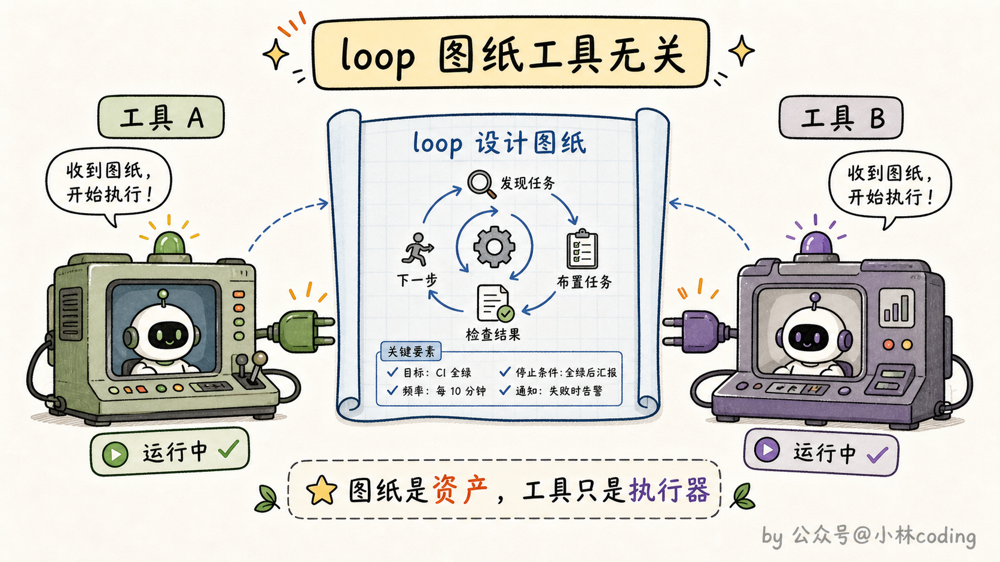
loop 图纸工具无关示意图
门槛已经从「自己造零件」降到了「学会拼装」，剩下的问题只是你想让 loop 替你做什么。
Q6：三盆冷水：loop 越好用，这三个问题越尖锐
文章到这里都挺振奋的，该泼冷水了。
有意思的是，泼得最狠的不是哪个反对派，恰恰是给概念定名的 Osmani 本人，他在博客里直说：「现在还早，我是持怀疑态度的。」
冷水的核心是一句话：loop 改变了工作，但没有把你从工作中删除。而且有三个问题，会随着 loop 越来越好用，变得越来越尖锐，而不是越来越轻松。
第一盆：验证仍然归你
loop 无人值守地运行，听起来很美。但换个角度念这句话：一个无人值守运行的 loop，也是一个无人值守犯错的 loop。
你睡觉时它在干活，也意味着你睡觉时它在犯错。
就算你按规矩配了负责检查的 sub-agent，也别高兴太早：检查 agent 嘴里的「done」，只是一个声明，不是一个证明。它说没问题，和真的没问题，中间还隔着你的眼睛。
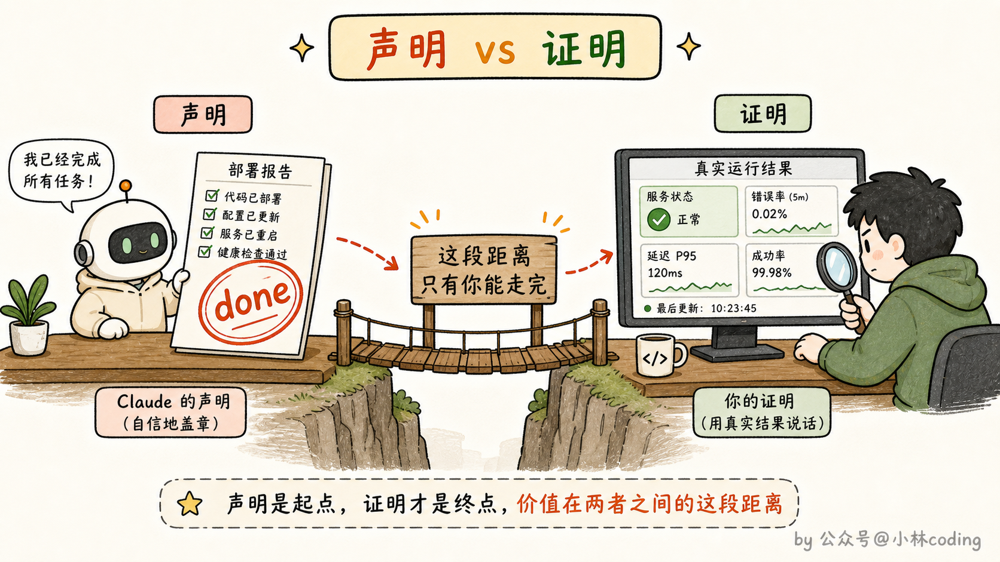
声明 vs 证明对比图
第二盆：理解债，越顺滑涨得越快
第二个问题更隐蔽。loop 交付你没写过的代码越快，「仓库里实际存在的东西」和「你脑子里真正理解的东西」之间的鸿沟就越大。
这有个专门的名字，叫理解债（Comprehension Debt）。
它和技术债不一样：技术债是代码烂，理解债是代码可能不烂，但你不知道它为什么是对的。出问题的那天，你面对的是一片自己「拥有」但不「理解」的代码。一个顺滑的 loop 不会帮你还这笔债，只会让它涨得更快，除非你坚持去读 loop 产出的东西。
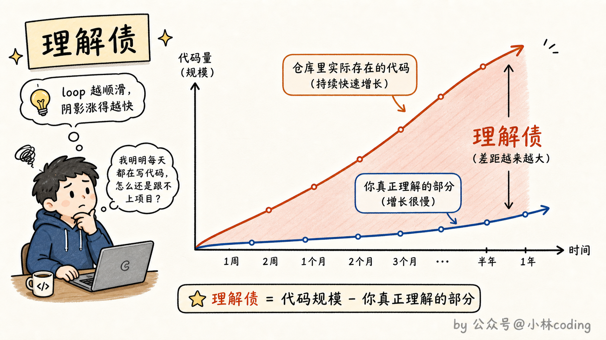
理解债鸿沟示意图
第三盆：认知投降，最舒服的姿势最危险
第三个问题最扎心。loop 自己转起来之后，你会发现一个特别舒服的姿势：不再对产出有自己的观点，它给什么就收什么。
这个状态有个专门的名字，叫认知投降（Cognitive Surrender）。Osmani 的博客里有一段关于它的原话，非常锋利：
「带着判断力去设计 loop，它是解药；为了逃避思考去设计 loop，它是助燃剂。同一个动作，相反的结果。」
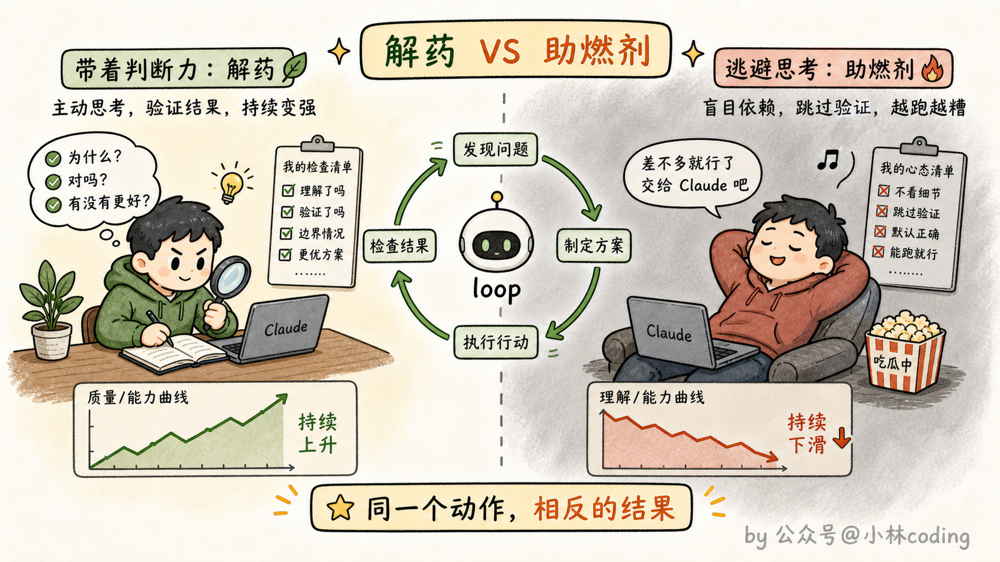
解药与助燃剂双面图
最后还有一笔很现实的账：token 成本。loop 是按循环烧 token 的，sub-agent 每多一个，就多一份模型和工具的开销。比较务实的花法，是把 sub-agent 用在「值得买第二意见」的地方，而不是处处双保险。token 富裕和精打细算这两种人，会设计出两种完全不同的 loop。
这三盆冷水有个共同点：它们都不是 loop 的 bug，而是 loop 的代价，并且由你来付。
最后
把整篇浓缩成 3 句话送你：
- 第一，从 prompt 到 context 到 harness 再到 loop，四个词是一场瓶颈迁移：模型越强，瓶颈越往外移，最后移到了「亲自按回车的你」身上。
- 第二，一个 loop 等于五大件加一份磁盘记忆：自动化是心跳，worktree 防打架，skill 治金鱼记忆，connector 摸到真实世界，sub-agent 写查分离，状态文件让明天接得上今天。
- 第三，loop 把你的杠杆变长了，但验证、理解债、认知投降这三笔账也同时变大了，工具分不出你是在加速还是在逃避，你自己分得出。
Osmani 文章的结尾有一段话，我觉得是整场讨论里最值得带走的：
「两个人可以搭一模一样的 loop，得到完全相反的结果。一个用它在自己深刻理解的工作上加速，另一个用它彻底逃避理解工作。loop 分不出区别，你分得出。」
如果你觉得这篇文章对你有启发，欢迎点个「在看」和「赞」，这是对小林最大的肯定和帮助。
我们下一篇见啦！
参考资料
- Peter Steinberger 的原帖：https://x.com/steipete/status/2063697162748260627
- Addy Osmani《Loop Engineering》：https://addyosmani.com/blog/loop-engineering
- Boris Cherny 访谈《Claude Code & the Future of Engineering》